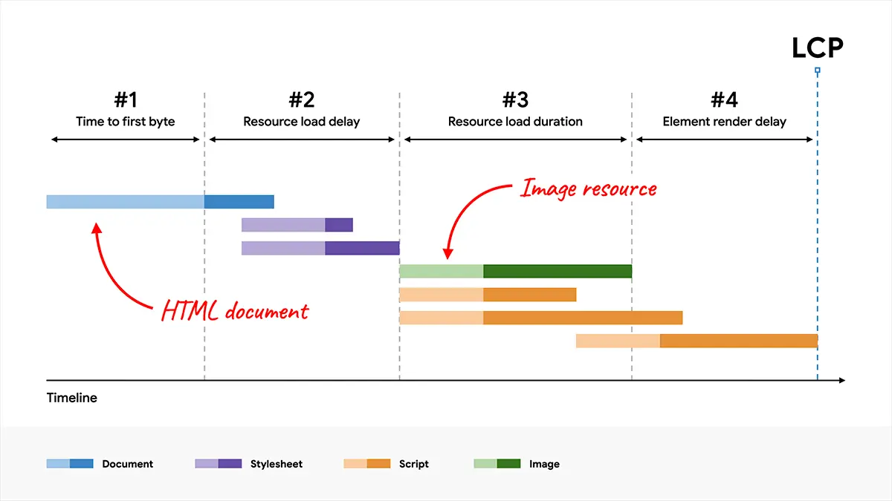

短答
最大内容绘制并不只是主视觉图片的下载。
等待可能在图片请求发出之前就开始：HTML 响应、发现图片 URL、传输，以及字节到达之后的绘制。健康记录如果只写“压缩主视觉”，就会漏掉真正长的那一段。
定义
拆分图把这些阶段分开，团队才能看出是文档晚了、图片发现晚了、文件太大，还是浏览器已经拿到文件却还在等绘制。每个阶段对应不同的修复。这些阶段都不是本页可以承诺的排名因素。
健康检查里怎么使用这个定义
记下样例 URL 上哪一段占主导，不要用一个编造的总毫秒数替换这个观察。
如果 HTML 本身就慢，压缩图片不会让时间线的起点提前。如果图片 URL 要等脚本在加载后才插入，爬虫和浏览器都会很晚才发现它。如果文件很大但立刻被发现，那么重量和格式才是相关的健康记录。这张图是阶段地图，不是某个域名的成绩单。

要检查什么
- HTML 响应是否在任何图片请求之前就晚了
- 主视觉 URL 是否写在初始 HTML 里
- 主视觉是否在首屏却被懒加载
- 字节到达之后绘制是否仍被挡住
- 主导阶段旁边有一条产品样例 URL
一个结构示例
泵配置器先发一个很轻的 HTML 壳，再由脚本去请求产品渲染图。最大元素就是这张图。长的阶段是发现，不是压缩一个浏览器还不知道的文件。健康动作是在第一份 HTML 里写上图片，或停止把主视觉当成首屏以下的资源。
它不声称什么
把 LCP 拆成阶段不保证排名，也不保证更快的索引结果。
Mika Visibility 把它归到哪里
Mika Visibility 把它归在 SEO 健康：线上站点在技术上是否准备好被发现和理解。SEO 增长仍是关于覆盖和意图的另一个问题。GEO 健康与 GEO 增长保持各自的尺度。一条加载或响应性记录不会自动变成增长分数，也没有混合总分。
图中的四个部分是为了让修复跟着长的阶段走，而不是跟着一句关于速度的口号。
常见问题
最大内容绘制是不是只等于图片下载？
最大内容绘制并不只是主视觉图片的下载。
健康记录应该记下什么？
记下样例 URL 上哪一段占主导，不要用一个编造的总毫秒数替换这个观察。
这种拆分能保证排名吗？
把 LCP 拆成阶段不保证排名，也不保证更快的索引结果。
下一步
做一次结构化的 SEO + GEO 审计，查看健康发现、增长缺口和可以执行的蓝图。
更清晰的实体、答案、证据和上下文，会让页面更容易被理解与引用。任何回答产品中的结果都不作保证。